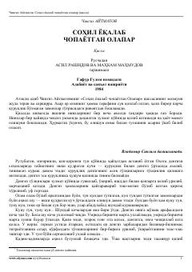

SYDengizda adashgan ovchilar va bolaning hayot uchun kurashi haqidagi ta'sirli qissa.
Ushbu qissa shimolda yashovchi nivx xalqining hayot-mamot kurashi haqida hikoya qiladi. Dengizda adashib qolgan bir guruh ovchilar va bir bolaning taqdiri orqali inson va tabiat o'rtasidagi azaliy kurash hamda insoniylik fazilatlari tasvirlanadi.